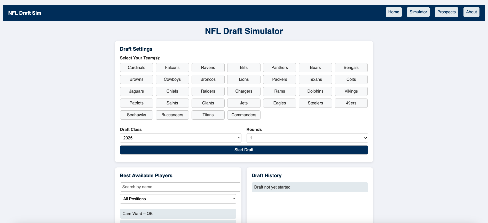

Peer Review 2
Sproles, Carson

Visit Website
- ✔ Link on ITIS 3135 homepage goes to correct client project
- ✔ No spaces or uppercase letters in filenames
- Design:
- ✔ Clear contrast and readable fonts
- ✔ Uses CSS file for styling
- ✔ CRAP principles applied well (Contrast, Repetition, Alignment, Proximity)
- Page Structure:
- ✔ Pages use header, main, and footer correctly
- ✔ Headings are properly structured
- ✔ Validation buttons are present and functional
- Navigation:
- ✔ Navigation bar appears on all pages
- ✔ Same placement and links on all pages
- Files & Features:
- ✔ File names follow conventions (index.html, styles.css, etc.)
- ✔ Uses images and content relevant to the site’s purpose
- ✔ JS interactivity works and enhances user experience
- Other Notes:
- Site is informative and polished. Text and visuals are balanced.
- Client project is clean and feels professional.